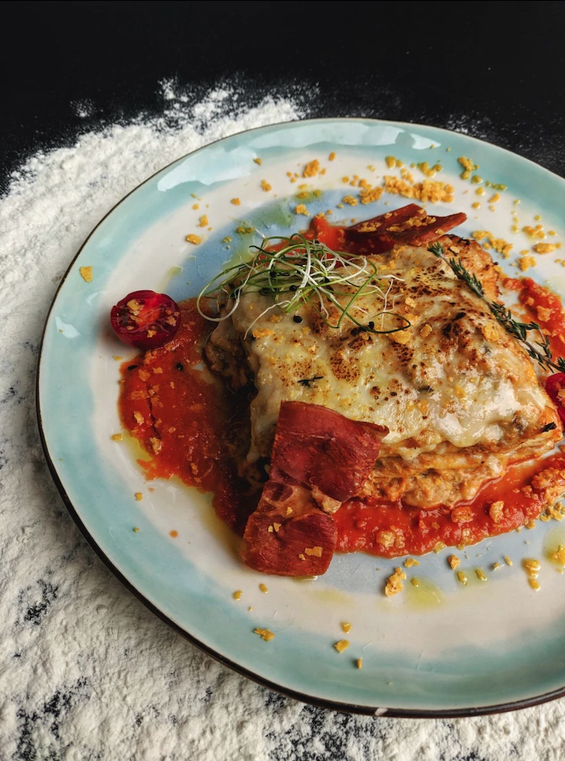

Lasagna

Description
This is a recipe for Alex's special lasagna, just like Grandmom used to make
Ingredients
- 3/4 lb. lasagna noodles
- 1 tsp. extra-virgin olive oil, plus more for drizzling
- 2 lb. ground beef
- 4 cloves garlic, minced
- 2 tsp. dried oregano
- Kosher salt
- Freshly ground black pepper
- 2 (32-0z.) jars marinara
- 16 oz. whole milk ricotta
- 1/2 c. freshly grated Parmesan, divided
- 1/4 c. chopped parsley, plus more for garnish
- 1 large egg
- 2 lb. sliced mozzarella
- 2 lb. sliced mozzarella